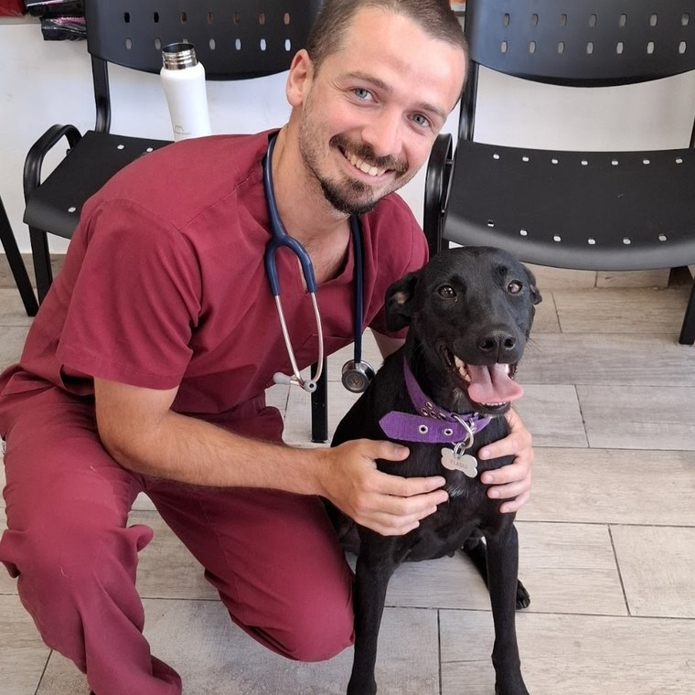

Zona Norte y CABA
Un veterinario que conoce a tu mascota, su historia y su rutina — y que te acompaña en el tiempo. Atiendo a domicilio, donde tu perro o tu gato están tranquilos.
Lo mismo que un médico de cabecera, pero para tu mascota
No empezás de cero en cada consulta. Sé qué vacunas tiene, qué le pasó el año pasado y cómo reaccionó al último tratamiento.
En su casa tu mascota está tranquila. Se nota especialmente en gatos, en animales grandes y en pacientes mayores.
Me escribís a mí, te contesto yo. Sin pasar por una recepción ni explicar todo de nuevo a un profesional distinto.
Atención clínica completa para perros y gatos
Seguimiento continuo por 3 meses, no una consulta suelta
Zona Norte y barrios de CABA
¿No ves tu barrio? Escribime igual — según el día y la zona puedo acercarme.

Soy Octavio Ochoa, médico veterinario egresado de la Universidad de Buenos Aires, con intensificación en pequeños animales.
Trabajo en clínica de perros y gatos desde 2021: me formé en hospital veterinario y consultorios de Zona Norte, y hoy estoy a cargo de la dirección clínica de un consultorio.
En paralelo, desde 2017 soy docente en la Cátedra de Anatomía Veterinaria de la Facultad de Ciencias Veterinarias de la UBA, y dirijo Canal Veterinario Live, una plataforma de formación continua para médicos veterinarios.
Videos y material sobre el cuidado de tu mascota
Contame qué le pasa a tu mascota y dónde estás. Te respondo yo, directamente.
Escribime por WhatsApp